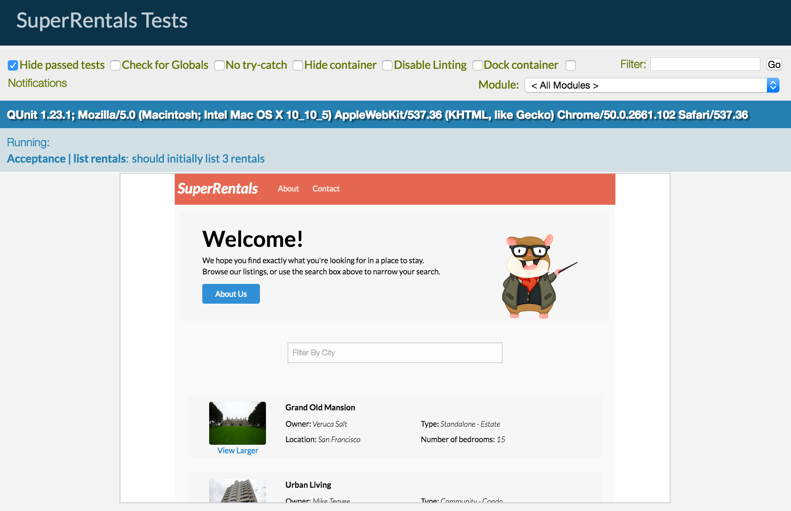

サービスとユーティリティ 編集
Super Rentalsで、各物件の場所を地図上を表示できるようにしたいですね。 この機能を実装するために、Emberのいくつかのコンセプトを活用しましょう。
- Google Maps APIから地図を作成するユーティリティ関数
- 描画されたマップをキャッシュし、アプリケーションのさまざまな場所で使用するためのサービス
- 各物件情報に地図を表示するコンポーネント
Googleマップを利用できるようにする
マップを実装する前に、EmberアプリでサードパーティのマップAPIを利用できるようにする必要があります。 Emberにサードパーティライブラリを含めるにはいくつかの方法があります。詳しくは 依存関係の管理を参照してください。
Google Maps APIは、外部スクリプトからライブラリを参照する必要があります。 今回は、ember-simple-google-mapsというアドオンを経由してその外部スクリプトを利用します。
1 |
ember install ember-simple-google-maps |
Googleマップには、導入にAPIキーが必要です。 GoogleからAPIキーを生成することができます。 新しいAPIキーをアプリケーションに追加するには、サーバーを停止し、GOOGLE_MAPS_API_KEY環境変数を設定してサーバーを再起動します。
1 |
GOOGLE_MAPS_API_KEY=<your key here> ember s |
ユーティリティを使用したGoogle Maps APIへのアクセス
Emberでは、ユーティリティはアプリケーションのさまざまな部分からアクセスできる再利用可能なコードです。 Super Rentalsでは、ユーティリティを使用してGoogle Maps APIにアクセスします。 ユーティリティではGoogle APIをMapsサービスに抽象化します。 これにより、アプリケーション内でマップAPIを再利用したり、他のマップに替える時のリファクタリングの容易化、およびそれに依存するコードのテストがしやすくなります。
アプリケーションでマップAPIを使用できるようになったので、マップユーティリティを作成に取り掛かりましょう。 ユーティリティファイルは、Ember CLIを使用して生成することができます。
1 |
ember g util google-maps |
CLIのgenerate utilコマンドはユーティリティファイルとユニットテストを作成します。
単体テストは、Googleコードをテストしたくないので削除します。
google.maps.Mapを使って地図を作成し、
google.maps.Geocoderで場所の座標を検索し、
google.maps.Markerをその座標にピンを置くcreateMap関数を作り、アプリケーションで利用します。
| app/utils/google-maps.js | |
1 2 3 4 5 6 7 8 9 10 11 12 13 14 15 16 17 18 19 20 21 22 23 24 25 26 27 28 |
import EmberObject from '@ember/object'; const google = window.google; export default EmberObject.extend({ init() { this.set('geocoder', new google.maps.Geocoder()); }, createMap(element, location) { let map = new google.maps.Map(element, { scrollwheel: false, zoom: 10 }); this.pinLocation(location, map); return map; }, pinLocation(location, map) { this.get('geocoder').geocode({address: location}, (result, status) => { if (status === google.maps.GeocoderStatus.OK) { let geometry = result[0].geometry.location; let position = { lat: geometry.lat(), lng: geometry.lng() }; map.setCenter(position); new google.maps.Marker({ position, map, title: location }); } }); } }); |
サービスを使って地図を取得する
これでマップ要素を生成できるようになりました。マップサービスを実装して、作成したMapオブジェクトへの参照を保持し、アプリケーションの要素にマップを添付します
サービスを使った地図APIへのアクセスは、いくつか利点があります。
- サービスロケータとともにインジェクトさルため、マップAPIを使用するコードからマップAPIを抽象化し、より簡単なリファクタリングとメンテナンスが可能になります。
- 遅延ロードされているため、最初に呼び出されるまで初期化されません。 場合によっては、これによりアプリのプロセッサ負荷とメモリ消費量が減少する可能性があります。
- シングルトンであるため、ブラウザにはサービスオブジェクトのインスタンスが1つしかありません。 これにより、ユーザーがアプリを開いている間は地図データを保持できるため、ページに戻る際に地図を再読み込みする必要はありません。
Ember CLIを使用してサービスを作成し、サービスファイルを作成してみましょう。また、サービスファイルの単体テストも作成します。
1 |
ember g service maps |
次のようにサービスを実装していきます。 特定の場所のマップが既に存在するかどうかを確認し、あればそのマップを使用します。 そうでない場合は、Google Mapsユーティリティを呼び出してマップを作成します。
| app/services/maps.js | |
1 2 3 4 5 6 7 8 9 10 11 12 13 14 15 16 17 18 19 20 21 22 23 24 25 26 27 28 29 30 31 32 33 34 35 |
import Service from '@ember/service'; import { camelize } from '@ember/string'; import EmberObject from '@ember/object'; import MapUtil from '../utils/google-maps'; export default Service.extend({ init() { if (!this.get('cachedMaps')) { this.set('cachedMaps', EmberObject.create()); } if (!this.get('mapUtil')) { this.set('mapUtil', MapUtil.create()); } }, getMapElement(location) { let camelizedLocation = camelize(location); let element = this.get(`cachedMaps.${camelizedLocation}`); if (!element) { element = this.createMapElement(); this.get('mapUtil').createMap(element, location); this.set(`cachedMaps.${camelizedLocation}`, element); } return element; }, createMapElement() { let element = document.createElement('div'); element.className = 'map'; return element; } }); |
コンポーネントで地図を表示する
ページ内に地図を描画するサービスとユーティリティは、 コンポーネントを使用してアプリケーションと繋ぎます。
Ember CLIを使用して地図コンポーネントを生成します。
1 |
ember g component location-map |
このコマンドを実行すると、コンポーネントのJavaScriptファイル、テンプレート、テストファイルの3つのファイルが生成されます。
コンポーネントテンプレートに div要素を追加することから始めましょう。
このdivは、サードパーティのマップAPIがマップを描画する場所として使います。
次に、コンポーネントを更新して、マップ出力を追加したdiv要素に追加します。
mapsと呼ばれるコンポーネントのプロパティを初期化することによって、マップサービスをコンポーネントに提供します。
サービスは通常、コンポーネントや他のEmberオブジェクトで[サービスインジェクション]によって利用可能になります。
import { inject } from '@ember/service';でプロパティを初期化すると、
Emberはその名前に一致するサービスでそのプロパティを設定しようとします。
mapsサービスでは、コンポーネントは指定された場所でgetMapElement関数を呼び出します。
コンポーネントのライフサイクルフックであるdidInsertElementを実装することによって、サービスから取得したmap要素を追加します。
この関数は、コンポーネントのマークアップがページに挿入後、コンポーネントのレンダリング中に実行されます。
| app/components/location-map.js | |
1 2 3 4 5 6 7 8 9 10 11 12 13 |
import Component from '@ember/component'; import { inject as service } from '@ember/service'; export default Component.extend({ maps: service(), didInsertElement() { this._super(...arguments); let location = this.get('location'); let mapElement = this.get('maps').getMapElement(location); this.$('.map-container').append(mapElement); } }); |
this.get('location')は、定義していないプロパティの場所を参照していることに気づいたかもしれません。 このプロパティは、下の親テンプレートによってコンポーネントに渡されます。
最後に、rental-listingコンポーネント用のテンプレートファイルを開き、location-mapコンポーネントを追加します。
サーバーを起動した後、地図が表示されているのを確認してください。

ここから先は、次の機能の実装に移動するか、引き続き追加したばかりの地図機能のテストを実装してください。
サービスの単体テスト
単体テストを使用してサービスを検証します。 単体テストは統合テストや受入れテストよりも分離されており、クラス内の特定のロジックをテストするためのものです。
サービスの単体テストでは、以前にロードされた場所はキャッシュからフェッチされ、新しい場所はユーティリティーを使用して作成されることを検証します。
マップユーティリティをスタブして、実際にGoogleマップを呼び出さないようテストを分離します。
下のmaps-test.jsの6行目では、ユーティリティの動作をシミュレートするEmberオブジェクトを作成しますが、Googleマップを作成する代わりに空のJavaScriptオブジェクトを返します。
テスト中のオブジェクトをインスタンス化するには、this.subject関数を使用します。初期値は引数で指定します。
ここでは、最初のテストでは偽物のマップユーティリティオブジェクトを渡し、2番目のテストではキャッシュオブジェクトを渡しています。
| tests/unit/services/maps-test.js | |
1 2 3 4 5 6 7 8 9 10 11 12 13 14 15 16 17 18 19 20 21 22 23 24 25 26 27 28 29 30 31 32 33 |
import { moduleFor, test } from 'ember-qunit'; import EmberObject from '@ember/object'; const DUMMY_ELEMENT = {}; let MapUtilStub = EmberObject.extend({ createMap(element, location) { this.assert.ok(element, 'createMap called with element'); this.assert.ok(location, 'createMap called with location'); return DUMMY_ELEMENT; } }); moduleFor('service:maps', 'Unit | Service | maps'); test('should create a new map if one isnt cached for location', function (assert) { assert.expect(4); let stubMapUtil = MapUtilStub.create({ assert }); let mapService = this.subject({ mapUtil: stubMapUtil }); let element = mapService.getMapElement('San Francisco'); assert.ok(element, 'element exists'); assert.equal(element.className, 'map', 'element has class name of map'); }); test('should use existing map if one is cached for location', function (assert) { assert.expect(1); let stubCachedMaps = EmberObject.create({ sanFrancisco: DUMMY_ELEMENT }); let mapService = this.subject({ cachedMaps: stubCachedMaps }); let element = mapService.getMapElement('San Francisco'); assert.equal(element, DUMMY_ELEMENT, 'element fetched from cache'); }); |
サービスが偽のユーティリティのcreateMapの実行すると、呼び出されたことを確認するためにアサートが実行されます。
最初のテストでは、17行目で4つのアサーションが実行されることがわかります.2つのアサーションはテスト関数で実行され、残りの2つは createMapが呼び出されたときに実行されます。
2番目のテストでは、マップ要素がキャッシュからフェッチし、ユーティリティを使用しないため、アサートは1つだけです（26行目）。
また、2番目のテストでは、返されたマップ要素（4行目で定義）としてダミーオブジェクトが使用されています。 地図要素は、キャッシュにアクセスしたことを主張するだけなので、どのオブジェクトでも置き換えることができます（32行目を参照）。
キャッシュ内の都市名はcamelizedされています（30行目）。
その要素を調べるための鍵として使用することができます。
これは、都市がまだキャッシュされていないときの getMapElementの振る舞いと合わせています。
マップコンポーネントの統合テスト
マップコンポーネントがGoogleのサービスに依存して地図要素を提供していることをテストしましょう。
サービスではなく、コンポーネントの動作のみを検証するように制限するため、サービスインジェクションをいかしてスタブを注入します。 Emberがマップサービスをコンポーネントに注入すると、実際のサービスの代わりに偽のサービスが使用されます。
アプリケーション内の実際のオブジェクトの代わりにスタブを使って、その動作をシミュレートします。
スタブに、位置に基づいてマップをフェッチするgetMapElementというメソッドを定義します。
| tests/integration/components/location-map-test.js | |
1 2 3 4 5 6 7 8 9 10 11 12 13 14 15 16 17 18 19 20 21 22 23 24 25 26 27 |
import { moduleForComponent, test } from 'ember-qunit'; import hbs from 'htmlbars-inline-precompile'; import Service from '@ember/service'; let StubMapsService = Service.extend({ getMapElement(location) { this.set('calledWithLocation', location); // We create a div here to simulate our maps service, // which will create and then cache the map element return document.createElement('div'); } }); moduleForComponent('location-map', 'Integration | Component | location map', { integration: true, beforeEach() { this.register('service:maps', StubMapsService); this.inject.service('maps', { as: 'mapsService' }); } }); test('should append map element to container element', function(assert) { this.set('myLocation', 'New York'); this.render(hbs`{{location-map location=myLocation}}`); assert.equal(this.$('.map-container').children().length, 1, 'the map element should be put onscreen'); assert.equal(this.get('mapsService.calledWithLocation'), 'New York', 'a map of New York should be requested'); }); |
各テストの前に実行されるbeforeEach関数では、組み込み関数this.registerを使用して、マップサービスの代わりにスタブサービスをregister(登録)します。
この場合、登録により、テンプレートからコンポーネントをロードしたり、サービスをインジェクトするなどの目的でEmberアプリケーションでオブジェクトを使用できるようになります。
this.inject.service関数の呼び出しは、登録したサービスをテストのコンテキストにinject(注入)するので、各テストはthis.get('mapsService')でアクセスすることができます。
この例では、スタブ内のcalledWithLocationが、コンポーネントに渡された位置に設定されていると主張しています。
受入れテストでサービスをスタブする
最後に、作成したサービスを考慮して受け入れテストを更新します。 地図が表示されていることを確認することは素晴らしいことですが、受け入れテストを実行するたびにGoogle Maps APIをドンドン叩きたくありません。 このチュートリアルでは、マップのDOMが画面にアタッチされているかは、コンポーネントの統合テストに任せます。 受け入れテストでは、マップリクエストの制限を超えないように、Mapsサービスをスタブします。
多く場合、第三者のAPIに接続するサービスを、自動テストに含めることは望ましくありません。 これらのサービスのスタブは、同じAPIを実装するスタブサービスを登録するだけで済み、テストスイートに問題のある依存関係が入ることはありません。
受け入れテストに次のコードを追加します。
| /tests/acceptance/list-rentals-test.js | |
1 2 3 4 5 6 7 8 9 10 11 12 13 14 15 16 17 |
import { test } from 'qunit'; import moduleForAcceptance from 'super-rentals/tests/helpers/module-for-acceptance'; import Service from '@ember/service'; let StubMapsService = Service.extend({ getMapElement() { return document.createElement('div'); } }); moduleForAcceptance('Acceptance | list-rentals'); moduleForAcceptance('Acceptance | list rentals', { beforeEach() { this.application.register('service:stubMaps', StubMapsService); this.application.inject('component:location-map', 'maps', 'service:stubMaps'); } }); |
ここでは、空のdivを作成する独自のマップサービスのスタブを追加しています。
次にEmberのレジストリに格納し、それを使用するlocation-mapコンポーネントにそれを注入します。
これにより、コンポーネントが作成されるたびに、マップサービスのスタブがGoogleマップサービスの代わりに注入されます。
受け入れテストを実行すると、テスト中はマップが描画されていないことがわかります。
